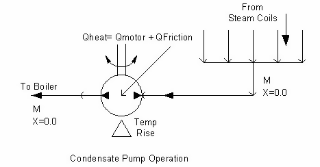

Building System Simulation System Manager / Processes
EnergyPlus uses a loop based HVAC system formulation. An example of the dual duct VAV system is shown below.
Air Loops
Definition of Air Loop
In EnergyPlus an air loop is a central forced air HVAC system. The term “loop” is used because in most cases some air is recirculated so that the air system forms a fluid loop. The air loop is just the “air side” of a full HVAC system. The input objects related to these air loops begin “AirLoopHVAC.”
For simulation purposes the air loop is divided into 2 parts: the primary air system (representing the supply side of the loop) and the zone equipment (representing the demand side of the loop). The primary air system includes supply and return fans, central heating and cooling coils, outside air economizer, and any other central conditioning equipment and controls. The zone equipment side of the loop contains the air terminal units as well as fan coils, baseboards, window air conditioners, and so forth. Supply and return plenums are also included on the zone equipment side of the loop.
Simulation Method
Simulating a forced air system and its associated zones can be done in a number of ways. EnergyPlus uses algebraic energy and mass balance equations combined with steady state component models. When the zone air and the air system are modeled with algebraic equations (steady state) then – in cases with recirculated air – there will be one or more algebraic loops. In other words it is not possible to solve the equations directly; instead iterative methods are needed. Typically a humidity ratio and a mass flow rate will be variables involved in the iterative solution.
In EnergyPlus the zone humidity ratios and temperatures are decoupled from the solution of the air system equations. The zone air is assigned heat and moisture storage capacities and the capacity effects are modeled by 1st order ordinary differential equations. During each system simulation time step new zone temperatures and humidities are predicted using past values. The zone temperatures and humidities are then held constant during the simulation of the air system (and the plant). Then the zone temperatures and humidity ratios are corrected using results from the system simulation. As a result the usual algebraic loops arising in steady state air system simulations are eliminated from the EnergyPlus system simulation. The zone temperatures, humidity ratios, and heating and cooling demands are known inputs to the system simulation.
The need for iteration can be reintroduced by the need for system control. If system setpoints are fixed, externally determined, or lagged and control is local (sensor located at a component outlet, actuator at a component inlet) then iteration can be confined to the components and the overall air system equations can be solved directly. However these requirements are too restrictive to simulate real systems. System setpoints are held fixed during a system time step. But controller sensors are allowed to be remote from the location of the actuator. Consequently EnergyPlus uses iteration over the entire primary air system in order to converge the system controllers.
Component Models
EnergyPlus component models are algorithmic with fixed inputs and outputs. They are embodied as Fortran90 subroutines within software modules. For each component several choices of inputs and outputs are possible. There is no one choice that will be most usable and efficient for all system configurations and control schemes. For reasons of consistency and comprehensibility the requirement was imposed that all EnergyPlus models be forward models. That is, the component inputs correspond to the inlet conditions and the outputs to the outlet conditions. If another choice of inputs and outputs is needed it is obtained by numerical inversion of the forward model.
Iteration Scheme
The primary air system simulation uses successive substitution starting at the return air inlet node and proceeding in the flow direction to the supply air outlet nodes. The iteration proceeds until an individual actuator-controller has converged (the sensed value matches the setpoint within the specified tolerance). The system controllers are simulated in sequence. During this sequence of iterative solutions the air mass flow rates are held constant. The controllers are converged by the method of interval halving. This method was chosen (rather than for instance Newton-Raphson) for its robustness.
Determination of Air Mass Flow Rates
In most cases the air mass flow rate of the central air system is set by zone equipment downstream of the primary air system. The air terminal unit components with their built in dampers and controllers respond to the zone heating and cooling loads by setting air flow rates at their inlet nodes. These flow rates are passed back upstream to the primary air system, establishing the flow rates in the primary air system branches. These flow rates are held fixed while the primary air system is simulated.
Air Loop Simulation
A complete simulation of each primary air system – zone equipment air loop is done in the following manner.
-
If this is the first simulation this system time-step, just call ManageAirLoops (simulates the primary air systems) and ManageZoneEquipment (simulates the zone equipment sets) once and quit. This initial pass is simulated with full design air flow rates and allows the zone equipment to set the flow rates for each zone that will meet the zone loads.
-
Otherwise loop over primary air systems and zone equipment sets until the temperatures, flow rates, enthalpies, humidity ratios etc. agree to within tolerance at each primary air system – zone equipment gap.
DO WHILE ((SimAirLoops .OR. SimZoneEquipment) .AND. (IterAir.LE.MaxAir) )
IF (SimAirLoops) THEN
CALL ManageAirLoops(FirstHVACIteration,SimAirLoops,SimZoneEquipment)
SimPlantDemandLoops = .TRUE
SimElecCircuits =.TRUE.
END IF
IF (SimZoneEquipment) THEN
CALL ResolveAirLoopFlowLimits(IterAir+1)
CALL ManageZoneEquipment(FirstHVACIteration,SimZoneEquipment,SimAirLoops)
SimPlantDemandLoops = .TRUE.
SimElecCircuits =.TRUE.
END IF
IterAir = IterAir + 1
END DO
CALL ResolveLockoutFlags(SimAirLoops)
The logical flags SimAirLoops and SimZoneEquipment are used to signal whether the primary air systems or the zone equipment sets need to be resimulated. These flags are set by the subroutine UpdateHVACInterface which is called from within ManageAirLoops and ManageZoneEquipment at the end of each half-loop simulation. UpdateHVACInterface (when called from ManageAirLoops) passes the values at the outlet nodes of a primary air system on to the inlet nodes of the corresponding zone equipment half-loop and similarly (when called from ManageZoneEquipment) passes the values of the outlet nodes of a zone equipment half-loop on to the inlet nodes of its corresponding primary air system. Each time UpdateHVACInterface is called it also checks whether the values at the half-loop outlet nodes are in agreement with the values at the downstream half-loop inlet nodes. If they are not it sets the simulate flag of the downstream half-loop to true. The values checked by UpdateHVACInterface and their tolerances are as follows.
| Quantities | Tolerances |
|---|---|
| specific enthalpy [J/kg} | 10.0 |
| mass flow rate [kg/s] | 0.01 |
| humidity ratio [kg H2O / kg dry air] | 0.0001 |
| quality | 0.01 |
| air pressure [Pa] | 10.0 |
| temperature [C] | 0.01 |
| energy [J] | 10.0 |
ResolveAirLoopFlowLimits is invoked to deal with zone equipment – primary air system flow mismatches. For instance the zone air terminal units (ATUs) may be asking for more air than the central fan can supply. In this case ResolveAirLoopFlowLimits takes the air flow that the fan can supply and apportions it among the ATUs in proportion to their design maximum air flow rates (ResolveAirLoopFlowLimits sets the ${\dot m_{\max avail,node}}$ at the entering node of each ATU in the system).
At the end of the air loop simulation ResolveLockoutFlags is called. This subroutine checks if any air system component has requested that the economizer be locked out. If such a request has been made and if the economizer is active, ResolveLockoutFlags sets SimAirLoops to true and the EconoLockout flag to true to ensure that the air loop will be resimulated with the economizer forced off.
Primary Air System Simulation
When the EnergyPlus HVAC simulation manager needs to simulate the primary air system side of the air loop it calls ManageAirLoops, the primary air system simulation manager subroutine.
Note that “air loop” is used inconsistently in the program: sometimes it means the full loop consisting of both supply & demand sides – primary air system and zone equipment; sometimes it means just the supply side – the primary air system.
Like the other manager routines in EnergyPlus, ManageAirLoops has a very simple structure:
Table 39. ManageAirLoop Code
IF (GetInputFlag) THEN !First time subroutine has been entered
CALL GetAirPathData ! Get air loop descriptions from input file
GetInputFlag=.false.
END IF
! Initialize air loop related parameters
CALL InitAirLoops(FirstHVACIteration)
! Call the AirLoop Simulation
IF (SysSizingCalc) THEN
CALL SizeAirLoops
ELSE
CALL SimAirLoops(FirstHVACIteration,SimZoneEquipment)
END IF
! No Update
! Report information at the Manage Air Loop Level
CALL ReportAirLoops
-
If the user input data has not been input, get the data and store it in the air loop data structures.
-
Perform air loop initialization calculations:
a. at the beginning of the simulation (one time initializations);
b. at the start of each environment (design day or simulation run period);
c. before each air loop simulation.
-
If automatic sizing of the loop flow rates is called for, do it.
-
Otherwise perform a simulation of the air loop.
Input data
The input data specifying an air loop consists of:
-
the loop configuration;
a. Splitters, Mixers, and Branches;
b. Components on the Branches
-
loop control;
a. Controllers;
b. System Availability Managers;
-
connection to zone equipment;
-
design flow rate.
These objects and their data are described in the EnergyPlus Input Output Reference document. The utility routines used to get and check the data are described in the EnergyPlus Guide for Module Developers, section Input Services.
Initialization Calculations
One Time Calculations
Zones Served by System
The main one time calculation involves figuring out what zones are served by each air loop. The EnergyPlus input does not explicitly describe which zones receive supply air from a given air loop. Instead that knowledge is embedded implicitly in the overall air loop – zone equipment network description. For sizing calculations it is important to have a data structure that explicitly shows which zones each air loop serves. For instance, the air loop design supply air flow rate is obtained by summing the design heating or cooling air flow rates of the zones connected to the air loop.
For each air loop, the following calculation is performed.
(1) For each air loop outlet branch, the corresponding zone equipment inlet node is identified.
(2) This node number is compared to the inlet node of all AirLoopHVAC:SupplyPaths. When a match is found, the AirLoopHVAC:ZoneSplitter for this supply path is identified.
(3) The outlet nodes of the AirLoopHVAC:ZoneSplitter are compared to the cooling inlet nodes of all the zone ZoneHVAC:AirDistributionUnits. When a match is found this zone is identified as being served by cooling supply air from the air loop.
(4) Similarly the outlet nodes of the AirLoopHVAC:ZoneSplitter are compared with the heating inlet nodes of all ZoneHVAC:AirDistributionUnits. A match indicates that this zone is served by heating supply air from the air loop.
(5) The case where there is no AirLoopHVAC:ZoneSplitter for a AirLoopHVAC:SupplyPath must be handled. In this case the program looks for a match between the zone equipment inlet node and an ZoneHVAC:AirDistributionUnit heating or cooling inlet node. When a match is found that zone is identified as being served with heating or cooling supply air from the air loop.
(6) The list of cooled and heated zones are saved in the air loop data structure AirToZoneNodeInfo.
Branch Sizing
If this not an air loop sizing calculation, but is the first pass through the HVAC code in a normal simulation, loop over all the branches in all air loops and trigger the branch design air flow auto-sizing calculation. The actual calculation is described in the Sizing section of this document.
Begin Environment Initializations
For each air loop, loop over all the branches in the loop. Initialize each branch mass flow rate:
where ${\rho_{std}}$ is the density of air at 20 degrees C, humidity ratio = 0, standard pressure.
For each branch, loop over all the nodes on the branch and set the node data to the following values:
where ${W_{oa}}$ is the humidity ratio of the outside air; ${\rm{PsyHFnTdbW}}$is the EnergyPlus psychrometric function for enthalpy h, given temperature and humidity ratio; and Qu is quality.
System Time Step Initializations
For each branch in each air loop, loop over all the nodes on the branch and set ${\dot m_{setpt,node}} = 0.0$; if it is the start of an HVAC solution sequence set ${\dot m_{\max avail,node}} = {\dot m_{\max ,node}}$. Then set the mass flow rate setpoints for the air loop nodes.
1) On each air loop, loop over the outlet branches and find the loop outlet nodes. If it is the start of an HVAC solution sequence, set ${\dot m_{setpt,outletnode}} = {\dot m_{outletbr,\max }}$. This will insure that during the first pass through the full loop that the mass flow rate will be at the maximum. Otherwise, set ${\dot m_{setpt,outletnode}} = {\dot m_{zone{\rm{ }}eq{\rm{ }}inletnode}}$. This sets the air loop flow rate to the total zone requirement.
2) Pass the mass flow rate setpoint upstream to the start of the outlet branches; through the splitter, if one exists; and upstream to the beginning node of the splitter inlet branch.
3) Sum the total return air mass flow rate and save it in the AirLoopFlow data structure.
4) For each air loop, loop over the inlet nodes and, at the start of each HVAC solution sequence, set the entering node mass flow rate equal to the primary air system design mass flow rate (subject to it not being larger than the entering node mass flow rate setpoint).
Central air system simulation
The subroutine SimAirLoops does the actual simulation the central air system equipment for all the air loops. The simulation of a full air loop (central equipment plus zone terminal units and equipment) requires the interaction of 2 managers: ManageAirLoops and ManageZoneEquipment. Thus a single call to SimAirLoops results in a simulation of all the central air system equipment, but this is one part of a larger iterative simulation of the full air loops involving the zone equipment as well.
SimAirLoops accomplishes its task using a set of nested loops.
-
Loop over all of the central air systems (Air Primary Loops).
-
For each air system, make 1 or 2 simulation passes
-
Loop over each controller in the Air Primary Loop
-
For each controller, repeat the simulation of all the Air Primary Loop components until the controller has converged
-
Loop over each branch in the Air Primary Loop
-
On each branch, simulate in sequence each component
During and at the end of each loop some tests are performed.
At the end of the first pass of loop 2, a decision is made on whether a second pass is needed. The first pass has been performed assuming that there is a mass flow balance in the central air system simulation. This is usually the case. A call to ResolveSysFlow checks the mass balance and imposes a mass balance if there is not a balance. The lack of a system mass balance requires a resimulation of the central air system: i.e., a second pass in loop 2.
In loop 3 a call to ManageControllers simulates controller action and checks for controller convergence. If convergence is achieved loop 3 is exited.
After all the controllers on a loop are converged, steps 5 & 6 are repeated one more time to ensure all the components on the loop have final values.
At the end of the primary air system simulation a call to UpdateHVACInterface passes the primary air system outlet node data to the zone equipment inlet nodes. If the data across the supply side – demand side gap doesn’t match to within a preset tolerance, the flag SimZoneEquipment is set to true to ensure that the zone equipment side gets resimulated. Finally a flag indicating whether the economizer is active is set. This flag is used at a higher level to decide whether the primary air system needs to be resimulated if an HVAC component is calling for economizer lockout.
Outdoor Air System
The AirLoopHVAC:OutdoorAirSystem is a subsystem of the primary air system (object AirLoopHVAC). To the primary air system it appears to be a single component. Within the subsystem are components and controllers very much like the primary air system. The purpose of the outside air system is to simulate the splitting of the return air into relief and recirculated air; mix the recirculated and outside air to obtain the mixed air (all accomplished by the OutdoorAir:Mixer); simulate the components in the outside air stream; control the components and outside air flow rate (economizer control). The outside air system differs from the primary air system in that it is not described in terms of splitters, mixers, and branches. Instead the components are simply listed in simulation order in an AirLoopHVAC:OutdoorAirSystem:EquipmentList input object. The components other than the OutdoorAir:Mixer are assumed to be in the outside air stream. The connectivity is defined by upstream component’s outlet node = downstream component’s inlet node. The OutdoorAir:Mixer should be the first component in the AirLoopHVAC:OutdoorAirSystem:EquipmentList object.
Simulation
The data for and simulation of the outside air system are contained in the MixedAir module. This includes the data and simulation of the OutdoorAir:Mixer and the Controller:OutdoorAir. The simulation of the outside air system is straightforward.
-
All controllers other than Controller:OutdoorAir are moved up to the primary air system level, where they are simulated with the primary air system controllers.
-
The Controller:OutdoorAir is simulated.
-
The compnents contained in the outside air system are simulated in the order of their input in the AirLoopHVAC:OutdoorAirSystem:EquipmentList.
Outdoor Air Mixer
The OutdoorAir:Mixer is the fundamental component of the outside air system. There should always be one OutdoorAir:Mixer in an AirLoopHVAC:OutdoorAirSystem. The outside air mixer splits the primary air system (AirLoopHVAC) return air into relief and recirculated air streams. Then it mixes the outside air stream with the recirculated air stream to obtain the mixed air stream. The outdoor air mixer has 2 inlet flow nodes: the return air node and the outside air node. It has 2 outlet flow nodes: the relief air node and the mixed air node.
Simulation
Given the air mass flow rates and conditions (humidity ratio, specific enthalpy) at the return air node, relief air node, and outside air node, the simulation uses mass and energy balance to calculate the air mass flow rate, humidity ratio, and specific enthalpy at the mixed air node. The mixed air temperature is calculated from the mixed air humidity ratio and specific enthalpy using the EnergyPlus psychrometric routine PsyTdbFnHW.
Zone Equipment Simulation
When the EnergyPlus HVAC simulation manager needs to simulate the zone equipment side of the air loop it calls ManageZoneEquipment, the zone equipment simulation manager subroutine. Like the other managers, ManageZoneEquipment has a very simple structure:
IF (GetInputFlag) THEN
CALL GetZoneEquipment
GetInputFlag = .FALSE.
END IF
CALL InitZoneEquipment(FirstHVACIteration)
IF (ZoneSizingCalc) THEN
CALL SizeZoneEquipment
ELSE
CALL SimZoneEquipment(FirstHVACIteration, SimAir)
END IF
CALL RecordZoneEquipment(SimAir)
CALL ReportZoneEquipment
SimZone = .False.
RETURN
-
If the user input data has not been input, get the data and store it in the zone equipment data structures
-
Perform zone equipment initialization calculations.
-
If calculation of the design zone air flow rates and loads needs to be done, do it. The results of this calculation are stored in the zone sizing data structures and used by the component automatic sizing algorithms and the central system sizing calculations.
-
Otherwise simulate all of the zone equipment.
-
Transfer the zone equipment outlet node data to the inlet nodes of the primary air systems and check for convergence (done in RecordZoneEquipment by calling UpdateHVACInterface).
Input data
The input specifying a set of zone equipment consists of:
-
the ZoneHVAC:EquipmentConnections object data;
a. the zone connection to the air loop – air inlet nodes, exhaust nodes, outlet node, zone node;
b. the components serving each zone – air terminal units, fan coils etc.;
-
zone supply air path data;
a. zone splitters and supply plenums;
-
zone return air path data;
a. zone mixer and return plenums;
Initialization Calculations
One Time Calculations
There are no one time calculations for zone equipment
Begin Environment Initializations
For each controlled zone initialize the zone inlet, exhaust and zone nodes to standard conditions. Namely:
where Woa is the humidity of the outside air; ${\rm{PsyHFnTdbW}}$is the EnergyPlus psychrometric function for enthalpy h, given temperature and humidity ratio; poa is the pressure of the outside air; and Qu is quality.
System Time Step Initializations
For each controlled zone, set the exhaust nodes conditions equal to the zone node conditions; except set the exhaust nodes mass flow rate and min and max available mass flow rates to zero.
Simulation
The subroutine SimZoneEquipment does the actual simulation of all the zone equipment. Note that this includes components that are part of the demand side of an air loop as well as components that are independent of any air loop.
For zone equipment components that are part of the demand side of an air loop the simulation sequence is effectively performed in the direction of the air flow. First the supply air plenums and zone splitters are simulated in their input order. Then the air terminal units are simulated followed by the zone return plenums and zone mixer. Each air terminal unit sets its inlet node to the air mass flow rate required to satisfy its zone load. These mass flow rates are then passed back upstream to the air loop demand-side inlet nodes at the end of each zone equipment simulation sequence. These demand-side inlet mass flow rates are then used as mass flow rate setpoints in the air loop supply-side simulation.
If multiple air-conditioning components are attached to a zone, the components are simulated in the order specified by the user assigned priority given in the ZoneHVAC:EquipmentList object.
For each full air loop there should be 1 supply air path for each primary air system outlet (i.e. 1 for single duct systems, 2 for dual duct systems). For each full air loop there should be one return air path. The supply air paths consist of any combination of zone splitters and zone supply air plenums as long as it forms a tree structure with the supply air path inlet node the root and the air terminal unit inlet nodes as the leaves. The return air path configuration is limited to a single mixer; there may be multiple return plenums.
-
Loop over all the supply air paths.
a. Loop over each component (supply plenum or zone splitter) on the supply air path and simulate each component. The components are simulated in input order.
-
Loop over all the controlled zones.
a. Set the required system output.
b. Loop over the components serving the zone in the user prioritized order.
i. Simulate each component. ii. Increment the required system output. -
Loop over all the supply air paths
a. Loop over the components on each supply air path in reverse input order. This reverse order simulation passes the air terminal units inlet mass flows back upstream to the return air path inlet node.
b. Check to see if the supply air path inlet node mass flow rate has changed. If it has set the SimAir flag to true. This signals the HVAC manager that the supply-side of the air loop needs to be resimulated.
-
Calculate the zone air flow mass balance – the zone inlet and exhaust mass flow rates are summed and the zone node and return air node mass flow rates are determined by a mass balance for each zone.
-
Calculate the conditions at each zone return air node. Here energy not included in the zone energy balance such as light-heat-to-return-air is added to the return nodes of the controlled zones.
-
Loop over all of the return air paths.
a. Loop over each component (return plenum or zone mixer) on the return air path and simulate each component.
This completes a single simulation sequence of all the zone equipment.
Air Path Components
Overview
The air path from the outlet of an AirLoopHVAC (the supply side of a full air loop / central air system) to the zone air distribution units (terminal units) is specified in a AirLoopHVAC:SupplyPath. The AirLoopHVAC:SupplyPath consists of AirLoopHVAC:ZoneSplitters and AirLoopHVAC:SupplyPlenums hooked together outlets to inlet.
The air path from the zone return nodes to the AirLoopHVAC inlet node is described in a AirLoopHVAC:ReturnPath object. The AirLoopHVAC:ReturnPath consists of AirLoopHVAC:ZoneMixers and AirLoopHVAC:ReturnPlenums hooked together outlet to inlets.
Zone Supply Air Path
The AirLoopHVAC:SupplyPaths are simulated just before the zone equipment is simulated and just after the zone equipment is simulated (in module ZoneEquipmentManager, subroutine SimZoneEquipment). In both cases the simulation consists of looping over all the AirLoopHVAC:SupplyPaths and simulating each component (AirLoopHVAC:ZoneSplitter or AirLoopHVAC:SupplyPlenum) in the path. For the “just before” simulation a flag FirstCall is set to True which tells the zone splitter and zone supply plenum models to do a downstream simulation (pass component inlet conditions to component outlets, except for air mass flow rate). For the “just after” simulation, FirstCall = False, which tells the components to do an upstream simulation (set the component inlet air mass flow rate to the sum of the component outlet air mass flow rates, do nothing with other properties).
Zone Splitter
The AirLoopHVAC:ZoneSplitter divides an inlet air stream into multiple outlet streams. Its data and simulation model are encapsulated in the module SplitterComponent. There are two simulation modes. If SimAirLoopSplitter is called with input parameter FirstCall = True then the splitter is simulated in downstream mode. The outlet air streams’ humidity ratio, pressure, enthalpy, and temperature are set to the conditions on the inlet air stream. If SimAirLoopSplitter is called with input parameter FirstCall = False, the splitter is simulated in the upstream mode. In this case the inlet air stream air mass flow rate is set to the sum of the outlet air mass flow rates. The same calculation is done for the maximum available and minimum available air flow rates.
Zone Supply Plenum
The AirLoopHVAC:SupplyPlenum acts analogously to the AirLoopHVAC:ZoneSplitter. The only difference is that the AirLoopHVAC:SupplyPlenum is associated with a Zone for which it sets the supply air flow rate and from which it gets its outlet air conditions. The AirLoopHVAC:SupplyPlenum divides an inlet air stream into multiple outlet streams. Its data and simulation model are encapsulated in the module ZonePlenum. There are two simulation modes. If SimAirZonePlenum is called with input parameter FirstCall = True then the plenum is simulated in downstream mode. The outlet air streams’ humidity ratio, pressure, enthalpy, and temperature are set to the zone conditions. If SimAirZonePlenum is called with input parameter FirstCall = False, the plenum is simulated in the upstream mode. In this case the inlet air stream air mass flow rate is set to the sum of the outlet air mass flow rates. The same calculation is done for the maximum available and minimum available air flow rates.
Zone Return Air Path
The AirLoopHVAC:ReturnPaths are simulated after all the zone equipment is simulated (in module ZoneEquipmentManager, subroutine SimZoneEquipment). The simulation is accomplished by a call to SimReturnAirPath (in module ReturnAirPathManager). The simulation just consists of looping over all the AirLoopHVAC:ReturnPaths and simulating the components (AirLoopHVAC:ZoneMixer or AirLoopHVAC:ReturnPlenum) in each path.
Zone Mixer
The AirLoopHVAC:ZoneMixer combines multiple inlet air streams into a single outlet air stream. Its data and simulation model are encapsulated in the module MixerComponent. The following mass and energy balance equations are used.
Where $\dot m$is air mass flow rate, W is humidity ratio, h is specific enthalpy, P is pressure, and T is temperature. PsyTdbFnHW is the EnergyPlus psychrometric function for drybulb temperature as a function of enthalpy and humidity ratio. The air mass flow rate calculation is also done for the maximum and minimum available mass flow rates.
Zone Return Plenum
The AirLoopHVAC:ReturnPlenum acts analogously to the AirLoopHVAC:ZoneMixer. The only difference is that the AirLoopHVAC:ReturnPlenum is associated with a Zone for which it sets the supply air flow rate and from which it gets its outlet air conditions. The AirLoopHVAC:ReturnPlenum combines multiple inlet air streams into a single outlet air stream. Its data and simulation model are encapsulated in the module ZonePlenum. The outlet air mass flow rate is obtained from
The outlet air temperature, enthalpy, humidity ratio and pressure are set to the zone conditions.
In addition to its normal function of acting as an air stream mixer, the return plenum can have 2 types of special connection to upstream air terminal units.
(1) The user can model the effects of duct leakage in VAV single duct systems using the Simplified Duct Leakage Model (see ZoneHVAC:AirDistributionUnit for how to set up this model). After the normal outlet air flow calculation is completed as above, the calculation loops over the air distribution units connected to the zones that feed air to the plenum and adds in to the outlet air mass flow rate the leakage air flow rates from the upstream leaks defined in the ZoneHVAC:AirDistributionUnit inputs. This connection between the leaks and the plenum is not explicit: no extra nodes are defined in the return plenum or in the terminal unit.
(2) The user can model secondary (recirculated) air drawn from the plenum into a fan powered induction unit (AirTerminal:SingleDuct:SeriesPIU:Reheat or AirTerminal:SingleDuct:ParallelPIU:Reheat). In this case the connection is explicit: extra outlet nodes are defined in the return plenum which act as the secondary air inlet nodes for the terminal units. The recirculated air flow rates are set by the terminal units. The outlet return air is then:
Plant Load Profile
The LoadProfile:Plant object is used to simulate a scheduled demand profile. This can be useful when the building loads are already known. Demanded load and flow rate are schedules specified in the object definition. The load profile can specify heating and cooling loads. Cooling loads are entered as negative numbers. The actual load met is dependent on the performance of the supply loop components.
The LoadProfile:Plant object must be connected on the demand side of the plant loop. If desired, multiple LoadProfile:Plant objects can be combined in series and/or parallel.
Calculation Model
The LoadProfile:Plant object calculates the outlet water temperature based on the inlet water temperature from the plant loop and user inputs for the scheduled plant load and the requested flow rate. The calculation can be expressed with the equation:
where
${T_{out}}$ = the outlet water temperature
${T_{in}}$ = the inlet water temperature
${Q_{load}}$ = the scheduled plant load
$\dot m$ = the water mass flow rate
${c_p}$ = the specific heat of water
The user requested flow rate is not always available from the plant loop. The actual flow rate used in the calculation is the lesser of the user requested value and the plant available value.
Note that the LoadProfile:Plant object can still request and receive flow even if the scheduled plant load is zero. In this case the outlet temperature will be the same as the inlet temperature. This allows users to drive the plant loop flow without necessarily affecting the loop temperature.
For reporting purposes the energy consumption of the object is calculated using the equation:
where
$E$ = the energy consumption
${Q_{load}}$ = the scheduled plant load
$\Delta t$ = the time step interval
Plant/Condenser Loops
Integration of System and Plant
In order to integrate the air handling system simulation with the zones simulation, methods were developed to model the system air loop and its interactions with the zones due to temperature controls and the relative difference between the zone and supply air temperatures. A similar situation is encountered when integrating the central plant simulation. Typically, the central plant interacts with the systems via a fluid loop between the plant components and heat exchangers, called either heating or cooling coils. In EnergyPlus the performance of the air systems and plant are interdependent because the simulations are combined. The plant outputs must match the system inputs and vice versa. That is, the temperature of the chilled water leaving the plant must equal the temperature of the water entering the coils, and the chilled water flow rate must satisfy mass continuity. In addition, coil controls are usually necessary to ensure that the values of chilled water flow variables entering and leaving the coil remain in a reasonable range. Plants can also interact with each other so that the operation of a chilled water loop and chiller will affect the operation of a condenser water loop.
Current Primary System Modeling Methodology
There are two main types of loops within the HVAC simulation in EnergyPlus: an air loop and a plant loop. The air loop is assumed to use air as the transport medium as part of an air handling system while the plant loops use a liquid fluid of the user’s choosing (typically water). Condenser loops are a special case of plant loop that are for heat rejection and are distinguished by slightily different control options and applicable equipment types. A user may have any number of each type of loop in a particular input file. There are no explicit limits on the number of loops within the program—the user is only limited by computer hardware. Execution speed will naturally vary with the complexity of the input file.
Plant loops are further divided into “half-loops” or “semi-loops” for organizational clarity and simulation logistics (see Figure “Connections between the Main HVAC Simulation Loops and Half-Loops”). These sub-loops, or half-loop sides, are matched pairs that consist of half of a main plant loop. Plant loops are broken into supply and demand sides. The plant demand side half-loop contains equipment that places a load on the primary equipment. This might include coils, baseboards, radiant systems, etc. The load is met by primary equipment such as chillers or boilers on the supply side half-loop. Each supply side half-loop must be connected to a demand side half-loop and vice versa. A similar breakdown is present on condenser loops where the demand side includes the water side of chiller’s condensers while the supply side includes condenser equipment such as cooling towers.

Figure 120. Connections between the Main HVAC Simulation Loops and Half-Loops.
The breakdown into two half-loops allows for better handling and control of information and simulation flow throughout the program. Direct connections between the half-loops of the air, plant, and condenser loops are enhanced by components with connections between the various main loop types. For example, coils (heating or cooling) are in reality heat exchangers with an air and a water or refrigerant side. The air side of the coil is handled within the air loop where the control of the device is also maintained. The fluid side of the coil is handled within the plant demand side, which passes the energy requirements of the coil on to the plant supply side. All loops are simulated together by successively modeling each half-loop in a particulary calling order. Overall iterations ensure that the results for the current time step are balanced and updated information has been passed to both sides of the sub-loops as well as across to the other side of air loop connections such as coils.
The plant equipment on a half-loop is described by a set of branches for that half-loop. Components can be arranged on a branch in series, and branches can be placed in parallel, with some restrictions. Figure “Branch Layout for Individual Plant Half-Loops” provides an overview of the intended branch layout for each plant half-loop. Branches are individual legs within the loop structure. Thus, the segment between point A and point B is defined as a branch, as is the section between points E and F. There may be multiple sections (C1 to D1 through Cn to Dn) in between the splitter and mixer.
Each half-loop may only have one splitter and one mixer. Thus, equipment may be in parallel between the mixer and splitter, however, within any single branch, there can only be components in series and not in parallel. The topology rules for individual half-loops allow a reasonable amount of flexibility without requiring a complicated solver routine to determine the actual flow and temperature conditions. Note that since plant supply and demand are broken up into two separate half-loops, chillers or boilers may be in parallel to each other in the supply side and coils may be in parallel to each other on the demand side. Thus, the restriction of only a single splitter and mixer on a particular half-loop does not unduly limit the allowable configurations. In some cases a single branch can be used to define an entire half-loop, but in general a half-loop should have a splitter and a mixer even if all equipment on the sub-loop is simply in series.
In addition, to avoid the need for overly complex solver routines, there are some restrictions on the placement of pumps within a particular half-loop. There are two general types of pumps, loop pumps and branch pumps. A pump that is the first component on the first branch (between A and B) is termed a “loop pump” while any pump in the parallel section (between Ci and Di) is termed a “branch pump”. The simplest and most common arrangement is to have one loop pump on the supply side inlet. In plant demand half-loops pumps can be placed only in the inlet branch. This will allow simulation of primary-secondary systems. For more information on pumps and pump placement rules, see the section on PipingSystem:Underground Simulation Pumps in this document.

Figure 121. Branch Layout for Individual Plant Half-Loops
Essentially, each branch is made up of one or more components linked together in series. The branch has system nodes that store properties at a location on the loop (temperature, enthalpy, flow rate, etc.) at the beginning and end of the branch as well as between components. Components on the branch take the conditions of the node at their inlet and use that information as well as overall control information to simulate the component and write the outlet data to the node following the component. This information is then used either by the next component on the branch or establishes the outlet conditions for the branch.
Although the plant model in EnergyPlus is quite flexible, in most cases the topology of the plant system in the model will be somewhat different from the topology of the actual plant system in a building. EnergyPlus is focused on modeling building energy performance over long periods of time and is not intended as a completely flexible system that can directly model any actual plant system with its full complexity and exact layout. Given the design of an actual complex plant system, the modeler will typically need to develop a simpler system that conforms to EnergyPlus’s capabilities and strives to capture the issues important for energy consumption modeling. Just like complex geometry should be simplified into thermal zones for energy models, complex plants should to be simplified into sets of pairs of closed half-loops with the allowed branch topologies.
Plant Manager
Plant Half-Loop Calling Order
Because there can be multiple plant loops in a model that depend on each other, one job of the plant manager is to determine an appropriate calling order for the half-loops. The intial starting calling order (and the order always used prior to EnergyPlus Version 7) is as follows:
1. Call all the demand side half-loops of the plant loops (in input object order)
2. Call all the supply side half-loops of plant loops (in input object order)
3. Call all the demand side half-loops of condenser loops (in input object order)
4. Call all the supply side half-loops of the condenser loops (in input object order).
This initial calling order is then revised during a setup phase of program execution when the plant component models are iteratively read in, initialized and sized. The algorithm is based on information provided by those component models that connect loops together. The components register that two loop-sides are connected and declare which one places demands on the other. If a half loop is connected and places demands on anther loop, then the calling order for the independent demanding loop is placed just ahead of the dependent loaded half-loop. For example a water cooled chiller component model reports that the supply side of the chilled water loop is connected to the demand side of the condenser loop and that the chilled water loop places demands on the condenser loop. The plant manger algorithm is iterative and repeatedly calls all of the half loops a total of four times. After this setup phase, the calling order is fixed for the rest of the simulation.
Plant Flow Resolver
Overview of the Plant Flow Resolver Concept
An important aspect of the solution procedure within plant loops is the method used to solve for the fluid flow rates throughout the various half-loops. This involves making the supply side meet a particular load and flow situation based on the simulation of the demand side loops. Load distribution is an issue that must be addressed as well as how flow rates are adjusted and temperatures are updated. These issues are discussed in the next several subsections, and the algorithms described are important to how the plant simulation functions.
In the first step, the plant loop manager calls the appropriate module to simulate (in flow order) all of the components on each branch of the loop except for splitters and mixers. In this step, each component would set the conditions at the outlet node including temperature, flow rate, maximum allowed (design) flow rate, minimum allowed (design) flow rate, maximum available flow rate, and minimum available flow rate. This would be based purely on the component’s own control scheme and thus each component would be free to request as much (or as little) flow as desired.
In the second step, the loop manager would resolve the flow at all nodes and through all branches of the local loop. The components are then simulated with the corrected flows. For this iteration, the flow resolver sets the flow rate through each loop component.
Overall Loop Flow Rate
The plant models determine an overall fluid flow rate for each loop based on the dynamic requests and needs of the components on the loop. The flow resolver examines the requests and needs of each half-loop and chooses an overall flow rate. As individual plant components are modeled, they register their requests for fluid flow which are stored on the inlet node (variable called MassFlowRateRequest). These requests for flow are used for two purposes, overall loop flows and resolution of parallel flows inside a splitter/mixer. For determining the overall loop flow request, the requests by individual components are further qualified into three categories based on the nature of the device.
1. Need flow and turns loop on
2. Need flow if loop is already on
3. Take what ever flow they get.
The loop will only run at all if there are flow requests of type 1. If there are flow requests of type 2, they will not turn on the loop but may affect the overall flow rate if it is already on because of some non-zero type 1 requests. Flow requests of type 3 will not affect the overall loop flow rate. These classifications are hard coded and cannot be altered by the user.
Pump Control for Plant and Condenser Loops.
The pump is quite simply the component that drives the flow (also see PipingSystem:Underground Simulation Pumps). . How it reacts depends on several different conditions. In total, there are three different decision variables, two of which are defined by user input. These three deciding factors are whether the pump is constant or variable speed, whether the pump operation is continuous or intermittent, and whether or not there is a request for overall loop flow. After the overall loop flow request has been determined the simulation knows what the loop would like to do. The next thing it does is simulation all the loop pumps to see what the pumps can actually provide. Then the overall loop flow is bounded by the minimum and maximum that the loop pumps can provide at that time. The operation of a constant speed pump is fairly straightforward. If the user designates a constant speed pump that is operating continuously, the pump will run regardless of whether or not there is a load. This may have the net effect of adding heat to the loop if no equipment is turned on. If the pump is constant speed and operates intermittently, the pump will run at its capacity if a load is sensed and will shut off if there is no load on the loop.
A variable speed pump is defined with maximum and minimum flow rates that are the physical limits of the device. If there is no load on the loop and the pump is operating intermittently, then the pump can shutdown. For any other condition such as the loop having a load and the pump is operating intermittently or the pump is continuously operating (regardless of the loading condition), the pump will operate and select a flow somewhere between the minimum and maximum limits. In these cases where the pump is running, it will try to meet the flow request for the overall loop.
In many cases, the first estimate of flow requested by the demand side tends to be fairly accurate and the flow rate does not vary in subsequent iterations. However, because there is the possibility that the coils or some other component might request more flow in future iterations during the same time step, the program must not only set flow rates but also maintain a record of the current maximum and minimum flow rate limits. This information is important not only to the pump itself but also to other pieces of equipment which may control their flow rates and thus require knowledge of the limits within which they may work. In general, the decisions on what to set the maximum and minimum flow rates is directly related to the type of pump (constant or variable speed). For constant speed pumps, the maximum and minimum flow rate values are the same and thus if the flow requested does not match this, the other components must either deal with the flow or a bypass branch must be available to handle the excess flow. For variable speed pumps, the maximum and minimum flow rates are set by the user-defined limits.
Plant/Condenser Supply Side
Component models, such as boilers, chillers, condensers and cooling towers are simulated on the supply side of the plant and condenser loops. In order to allow specification of realistic configurations, the plant loop managers were designed to support parallel-serial connection of component models on the loop. In addition, loop managers were designed to support both semi-deterministic models (e.g. the parameter estimation models of the ASHRAE Primary Toolkit [Pedersen 2001]) and “demand based” models (e.g. the performance map models of BLAST and DOE2.1E). As a result, the loop manager must be able to simulate models that require the mass flow rate as an input and models that calculate the mass flow rate as an output—sometimes in the context of a single loop configuration.
In order to achieve these design criteria without resorting to a pressure based flow network solver in the HVAC portion of the code, a rules-based “flow resolver” was developed for the EnergyPlus plant manager. The flow resolver is based on the following assumptions and limitations:
-
Each loop is only allowed to have a single splitter and a single mixer
-
Due to the fact that there can only be one splitter and one mixer on a given loop, it follows logically that there can be at most one bypass on each loop side
-
No other components may be in series with a bypass, i.e., a branch that contains a bypass may have no other equipment on that branch
-
Equipment may be in parallel only between the splitter and mixer components of a loop
-
Equipment may be hooked together in series in each branch of the loop
-
Flow rates on individual branches will be controlled using maximum and minimum available flow rate limits
The flow resolver employs a simple predictor-corrector algorithm to enforce mass continuity across the plant loop splitter as shown in the following figure.

Figure 122. Plant/Condenser Supply Side Solution Scheme.
As previously discussed, the pump establishes the total loop mass flow rate by setting the flow in the first supply side branch. In the second step, a predictor algorithm calls to simulate each piece of equipment on the loop and they update their mass flow rate requests based on the current flow rates, temperatures and load dispatch requests. The loop manager calls the appropriate module to simulate (in flow order) all of the components on each branch of the loop except for splitters and mixers. In this step, each component sets the conditions at its outlet node including temperature and sets component flows on the inlet node. Each component and branch is classified for their type of flow control. Prior to version 7 this was input by the user where branch objects were tagged in the user input file as an ACTIVE, SERIESACTIVE, PASSIVE or BYPASS type of model. As of version 7 this has been hard coded and the input is no longer used. An ACTIVE flow control type describes a demand based plant model that calculates mass flow rate as an output. An ACTIVE component when OFF will shut down the whole branch irrespective of the type of other components on the branch. A SERIESACTIVE branch is like an ACTIVE component except that there are more than one ACTIVE components on the branch so that two components requests may be at odds with each other and so it might not shut down the whole branch when the component is OFF. The flow resolution algorithm is same for both ACTIVE and SERIESACTIVE components and in the rest of the document description of one type will fit the other type too. A PASSIVE type describes a semi-deterministic model that is simulated with the mass flow rate as an input. The BYPASS type designates a loop bypass.
The predictor algorithm first establishes the desired flow rate of each branch by searching for ACTIVE components on the branch. The first ACTIVE component in simulation order sets the desired branch flow. Branches with only PASSIVE components require a flow rate between the minimum and maximum allowable branch flow. Branches with a BYPASS component have a branch flow only when all other branches combined cannot handle the entire loop flow.
The loop flow resolver makes any necessary “corrections” to the requested branch flows in order to enforce overall continuity on the loop. If mass conservation allows all ACTIVE branches to be satisfied, then the remaining flow is divided between the PASSIVE branches and as a last resort, the BYPASS. If there is insufficient flow to meet the branch demand, ACTIVE branch requests are met first in the order that the branches appear in the branch list in the input file.
The flow rate is resolved first for each individual branch. For every branch, the program cycles through each node on the branch and determines what the flow requests and flow limits are. The most restrictive flow constraints are assumed to be valid for the entire branch regardless of component type. Active components are given highest priority for requesting a particular flow rate. If there is more than one active component on a particular branch, then it is assumed that the active component on the branch with the highest flow request dictates the flow request for the entire branch.
Once all of the branches have set their flow rates and constraints, the splitter and mixer must resolve the various flow requests. The mixer and any branch following the mixer is passive. Thus, all of the flow control happens at the splitter. The splitter first attempts to sum the maximum and minimum constraints from all of the active branches coming out of the device and compares those to the constraints that are valid for the branch leading into the splitter. When there is a mismatch between the outlet constraints and the inlet constraints, the simulation will defer to the inlet constraints due to the fact that the pump is in reality controlling flow on the loop. Since the constraints of the pump would be passed across to the demand side from the supply side, an assumption is made that the coils or other demand side components must live within the bounds of the pump.
Once the flow has been resolved at the splitter, the branch flow rates and constraints between the splitter and mixer can be adjusted, if necessary. In some cases, this will be mandatory to maintain a mass balance at the splitter. When the flow rate coming out of the splitter does not match the active branch requests, individual branch flow rates must be adjusted to provide for the extra flow or the “flow deficit”. When there is extra flow, the excess flow is sent through any bypass branch first and then is sent to passive branches in reverse order of their appearance in the splitter outlet list. When all of these branches have been exhausted and there is still excess flow, flow will be increased to the active branches, also in reverse order. The reverse order guarantees that the branch appearing first has the highest priority to receive the flow rate it has requested.
if there is not enough flow to meet all active branch requests (i.e., a “flow deficit”), then the flow rates through the bypass and passive branches are set to zero. The flow rates through the active branches will then be decreased in reverse order until the splitter outlet flow rate matches the available flow at the splitter inlet. For a plant loop flow deficit, the bypass and passive branch flows are also set to zero, and flow rates for each active branch are calculated as follows:
where:
It is also necessary to monitor the flow constraints at the branches and components since once the flow rates are changed, the components must be resimulated by the controlling loop (air loop, zone equipment, or plant supply side). The controllers for these components must know if the constraints have been modified so that the simulation does not toggle between a component requesting a flow that the pump cannot meet and the pump then resetting the flow to what it can provide. Note that once a flow rate for any component has changed that this signals the need to resimulate any sub-loop to which it might have an indirect connection. Currently, this means that if a flow rate on the plant demand side changes, the simulation must recalculate the conditions on both the air loop and zone equipment sub-loops since coils and other equipment could be on either side of the main air loop. Similarly, if the condenser demand side simulation results in a change in flow rate through a chiller condenser, then the plant supply side must be triggered to perform its calculations again. Care has been taken to avoid cases where the various half-loops might simply keep triggering the resimulation of their indirect connections in an infinite loop.
Loop Capacitance and Pump Heat
The plant model includes simplified methods of modeling fluid capacitance and the temperature rise because of pumping and friction. The transition from load or energy based plant models to a loop based arrangement makes variables of both the flow rate and the fluid temperature. This means there are more degrees of freedom that must be controlled. The flow resolver concept discussed previously controls the fluid flow rates through the components and maintains an overall mass flow balance through the loop. However, the temperatures still need to be controlled and modeled. A purely iterative procedure can be expected to converge to the appropriate loop temperatures, but the procedure can become slow to converge under conditions where the demand changes rapidly or the supply components may not have enough capacity to meet the system demand. This situation is somewhat analogous to that existing in the link between the zone and the air system. In that case, the convergence and stability of the iterative solution was greatly improved by adding the thermal capacitance of the zone air and other fast responding mass within the zone. Based on that experience, it was decided to add thermal capacitance to the plant loop model to benefit from the added stability. Because the thermal capacitance in the zone/system interaction is relatively small, it was necessary to use a third order numerical solution there. Although the plant loop’s fluid thermal capacitance is relatively high, the fluid flows also have high heat capacity and can change temperatures rapidly a simple first order solution was not found to be satisfactory and an exact analytical solution was needed.
In realistic conditions there is often some delay between changes in supply conditions and corresponding changes at demand side components due to the transport of fluid round the loop having a finite velocity.
The act of pumping fluid around a loop adds heat to the fluid through friction. The slight warming occurs at the pump and all around the circuit. The amount of heat is equal to the work done on the fluid by the pump. This so-called pump heat is a complicating factor in plant simulation because the pump heat alters the load on primary equipment. A simple method of accounting for pumping heat is needed that doesn’t increase the difficulties of the numerical solution and (as of version 7) in EnergyPlus this accomplished by including the pump heat in the loop capacitance model.
Plant loops include a simple loop capacitance model to simulate these effects based on a well-stirred tank model. Each half-loop has a well-stirred tank located at its inlet as indicated in Figure 123. The temperature of the tank is modeled as a function of the tank mass, inlet fluid flow rate and temperature, and pump heat. No energy is lost or gained because of storage in the loop capacitance.

Figure 123. Loop Capacitance Tank Models
The total plant loop volume is separated into two tanks, on on each half-loop inlet. For normal loops (without common pipes) each tank is one half of the plant loop volume. For common pipe plant loops, the tank on the supply side inlet has three fourths of the volume and the tank on the demand side inlet has one fourth. Each plant loop is assigned a total fluid volume as user input or an autocalculate routine based on the design flow rate. The size of the thermal capacitance affects the speed of recovery from situations where the setpoint was not maintained. The user must estimate a fluid volume based on the size of the pipes in the loop. Note that rough estimates seem to be sufficient. Loop capacitance (m3) could be calculated from pipe size data but this is not usually known. If zero capacitance is specified the above formulation reduces to an instantaneous update in demand update temperature and the demand inlet temperature becomes the supply outlet temperature at the previous time step. If a very large capacitance is specified unrealistic time delay may result and there may be poor response to changes in loop setpoint temperature. The loop capacitance ‘autocalculate’ option gives reasonable values and is calculated as follows,
The tank temperature is modeled by drawing a control volume and energy balance around the tank and solving for the temperature. The temperature of each tank is recalculated whenever the two half-loops are interfaced together. The tank temperature history is stored at the end of the simulation timestep. The model equation for tank (and outlet temperature) is formulated as follows:
The tank temperature at the end of the simulation timestep is solved by the analytical approach and expressed as
where:
$T_{tank}^{t - \delta t}$ = Previous system time-step tank temperature [°C]
$T_{tank}^t$ = Current tank and tank outlet temperature [°C]
$\dot m$ = Current fluid mass flow rate through the tank [kg/s]
$\delta t$ = Duration of system time step [second]
${c_P}$ = Heat capacity of fluid [J/kg]
${M_{tank}}$ = Mass of the water in the tank [kg]
${\dot Q_{pumpheat}}$ = Heat generated by a pump in the tank [W]
When modeling plants using one of the common pipe modes for plant loops, the same tank model is used but the tanks are situated differently and account for extra connections. For common pipe situation, the tanks are located on the outlet of a half loop with common pipe interactions downstream of the tank.
The average temperature is reported as the tank temperature. The average temperature is defined as the value of an integral function of tank temperature on an interval [0,δt]
Plant Flow Resolver Input
The input specifically related to the flow resolver consists of the plant BranchList and the plant ConnectorList as shown in the Input Output Reference. User defined names link the plant loop to its branches (contained in the BranchList) and define the loop splitters and mixers contained in the ConnectorList. The Connector:Splitter and Connector:Mixer syntax in turn define the relative connection of the branches to each other on the loop.
The Branch definition is input in simulation and connection order for all of the components on the branch. The simulation assumes that the inlet node of the first component listed on the branch is the branch inlet node and the outlet node of the last component listed on the branch is the branch outlet node. Examples of all the input syntax is shown in the Input/Output Reference for the appropriate object.
Summary of Load Distribution Schemes
Five load distribution schemes are employed in EnergyPlus. The figure below illustrates the plant load distribution algorithm. The total loop demand is calculated and used in the ManagePlantLoopOperation routine to determine which equipment is available based on the supervisory control scheme specified by the user. Once all available components have been identified the loop demand is distributed to the available components based on the user specified load distribution scheme.

Figure 124. Load Distribution Scheme
The OPTIMAL scheme first loads each component to its optimal part load ratio (specified in input). Any remaining loop demand is distributed evenly to all the components. The UNIFORMLOAD scheme first divides the load evenly among all available components. If some components do not have the capacity to meet the uniformly distributed load, the remaining load is divided among the remaining components. The SEQUENTIALLOAD scheme loads each component one at a time to capacity until the loop demand is met. The components are loaded up in the order that they appear in the equipment list specified in input. The UNIFORMPLR scheme loads all equipment uniformly by maintaining uniform part load ratios across all equipment on the equipment list. If the load is below the load required by the plant to operate at the largest component minimum part load ratio, the last item is removed from each equipment list. This process is repeated until the plant can operate above the largest component minimum part load ratio. The SEQUENTIALUNIFORMPLR scheme loads all equipment in the order specified on the equipment list to capacity while operating all operational equipment at uniform part load ratios.
Note: For all schemes, if the load for any individual component is less than the component load at the minimum PLR, the individual component model will false load or reduce duty cycle while operating at the minimum part load ratio until the load is met.
Summary of Plant Loop Demand Calculation Schemes
There are two plant loop demand calculations schemes in EnergyPlus. There is a SingleSetPoint and a DualSetPointDeadband; the SingleSetPoint is the default if that field is left blank in the PlantLoop object. In the SingleSetPoint scheme the Plant Loop requires that a Setpoint Manager set a single setpoint value that sets Node%TempSetPoint. Examples of this Setpoint Manager would be: the objects SetpointManager:Scheduled, SetpointManager:OutdoorAirReset, etc. For the DualSetPointDeadband scheme the Plant Loop requires that a Setpoint Manager that sets the high and low setpoint values for Node%TempSetPointHi and Node%TempSetPointLo. Examples of this setpoint manager would be: SetpointManager:Scheduled:DualSetpoint. Look in the Input Output Reference for the correct usage of these SetpointManagers.
The Plant Loop Demand Calculation Scheme determines the amount of heating or cooling necessary to bring the temperature of the Plant Loop to its setpoint(s). When this value is determined then the Load Distribution scheme explained in the previous section takes this value and distributes the load to the appropriate equipment. The demand calculation scheme determines how the load is calculated. In the next section is a summary of the 2 algorithms and how they are used.
Loop Demand Calculation Scheme SingleSetPoint
The SingleSetPoint scheme for the PlantLoop takes the value that is placed on the Node%TempSetPoint and calculates the heating or cooling load necessary to obtain that setpoint.
DeltaTemp = LoopSetPoint - LoopTempIn
LoopDemand = mdot * Cp * DeltaTemp
The sign of the Loop Demand determines if the loop has a cooling or heating load. Then the Load Distribution scheme distributes this calculated load to the appropriate equipment.
Loop Demand Calculation Scheme DualSetPointDeadband
The DualSetPointDeadband scheme for the PlantLoop takes the value that is placed on the Node%TempSetPointHi and Node%TempSetPointLo calculates the heating or cooling load necessary to obtain that setpoint; if in the DeadBand then no load is calculated. The pseudo code below shows the basis of the algorithm.
!Calculate the demand on the loop
IF (mdot > 0.0) THEN
LoadtoHeatingSetPoint = mdot*Cp*(LoopSetPointLo - LoopTempIn)
LoadtoCoolingSetPoint = mdot*Cp*(LoopSetPointHi - LoopTempIn)
! Possible combinations:
! 1 LoadToHeatingSetPoint > 0 & LoadToCoolingSetPoint > 0 --> Heating required
! 2 LoadToHeatingSetPoint < 0 & LoadToCoolingSetPoint < 0 --> Cooling Required
! 3 LoadToHeatingSetPoint < 0 & LoadToCoolingSetPoint > 0 --> Dead Band Operation
! 4 LoadToHeatingSetPoint > 0 & LoadToCoolingSetPoint < 0 --> Not Feasible
IF (LoadToHeatingSetPoint .GT. 0.0 .AND. LoadToCoolingSetPoint .GT. 0.0) THEN
LoopDemand = LoadToHeatingSetPoint
ELSE IF (LoadToHeatingSetPoint .LT. 0.0 .AND. LoadToCoolingSetPoint .LT. 0.0) THEN
LoopDemand = LoadToCoolingSetPoint
ELSE IF (LoadToHeatingSetPoint .LT. 0.0 .AND. LoadToCoolingSetPoint .GT. 0.0) THEN
LoopDemand = 0.0
ELSE
CALL ShowSevereError
END IF
ELSE
LoopDemand = 0.0
END IF
IF(ABS(LoopDemand) < LoopDemandTol) LoopDemand = 0.0
The sign of the Loop Demand determines if the loop has a cooling or heating load. Then the Load Distribution scheme distributes this calculated load to the appropriate equipment, if there is any.
Plant and Condenser Equipment Operation Schemes
Plants and condenser loops must have some mechanism for controlling the operation of the loop and which equipment is available under different operating conditions. Once the Loop load is calculated by the return conditions from the demand side and using the loop setpoint, this load needs to be allocated to the supply equipment according to the users input. This is mainly done by the operation schemes.
Each operation scheme must have the type of operation scheme, its identifying name, and the schedule that defines its availability. The first scheme appearing in the list is given the highest priority; the second scheme has second highest priority, etc. In other words, if according to its schedule, the first operation scheme is available, then it is used by the simulation to define how the plant or condenser loop operates. If it is not available, the second operation scheme in the list is checked to see if it is available until the highest priority scheme that is also available is found. See the Input Output Reference for input field details.
Plant Operation Schemes
See the Input Output Reference for input field details. The options for plant control schemes are:
Uncontrolled Loop Operation
The PlantEquipmentOperation:Uncontrolled scheme takes the full capacity of the supply equipment and cools or heats the loop accordingly. An example would be a cooling tower where the cooling tower would cool the condenser loop with all of its available capacity and not be limioted by a capacity range or setpoint. Uncontrolled loop operation simply specifies a group of equipment that runs ‘uncontrolled’. If the loop runs, this equipment will run also, unless turned off by the loop flow resolver to maintain continuity in the fluid loop.
Cooling Load Range Based Operation or Heating Load Range Based Operation
PlantEquipmentOperation:CoolingLoad (or PlantEquipmentOperation:HeatingLoad) defines the different ranges and which equipment list is valid for each range. In each trio, there is a lower limit for the load range, an upper limit for the load range, and a name that links to an equipment availability list (PlantEquipmentList). Load range operation is used when the loop load is calculated and then the equipment is selected in the proper range. This allows for the most efficient operation of the plant equipment or for the user to determine the most efficient plant configuration. When the equipment list has been deteremined then the load is allocated to the equipment in a manner selected by the user with “Optimal or Sequential” load distribution scheme. The load range based operation scheme has two statements associated with it: a main statement that defines the ranges that individual priority settings are valid and the lists of equipment that may be used for each range.
Condenser Operation Schemes
This is very similar to the plant operation schemes, but there are several more options avaible with the CondenserLoop. The condenser operation schemes apply to the equipment on the ‘supply side’ of the condenser loop—pumps, cooling towers, ground coupled heat exchangers, etc. The keywords select the algorithm that will be used to determine which equipment is available for each time step. The ‘Range Based Operation’ schemes select a user specified set of equipment for each user specified range of a particular simulation variable. ‘Load Range Based’ schemes compare the demand on the condenser supply side with specified load ranges and associated equipment lists. ‘Outdoor…Range Based’ schemes compare the current value of an environmental parameter with user specified ranges of that parameter. See the Input Output Reference for input field details.
Uncontrolled Loop Operation
The PlantEquipmentOperation:Uncontrolled scheme takes the full capacity of the supply equipment and cools or heats the loop accordingly. An example would be a cooling tower where the cooling tower would cool the condenser loop with all of its available capacity and not be limioted by a capacity range or setpoint. Uncontrolled loop operation simply specifies a group of equipment that runs ‘uncontrolled’. If the loop runs, this equipment will run also, unless turned off by the loop flow resolver to maintain continuity in the fluid loop.
Cooling Load Range Based Operation or Heating Load Range Based Operation
PlantEquipmentOperation:CoolingLoad (or PlantEquipmentOperation:HeatingLoad) statement defines the different ranges and which equipment list is valid for each range. In each trio, there is a lower limit for the load range, an upper limit for the load range, and a name that links to an equipment availability list (CondenserEquipmentList). Load range operation is used when the loop load is calculated and then the equipment is selected in the proper range. This allows for the most efficient operation of the plant equipment or for the user to determine the most efficient plant configuration. When the equipment list has been deteremined then the load is allocated to the equipment in a manner selected by the user with “Optimal or Sequential” load distribution scheme. The load range based operation scheme has two statements associated with it: a main statement that defines the ranges that individual priority settings are valid and the lists of equipment that may be used for each range.
Outdoor Drybulb Range Based Operation, Outdoor Wetbulb Range Based Operation, Outdoor RHPercent Range Based Operation
The various “PlantEquipmentOperation:Outdoor*” statements define the different ranges of the various environmental parameters and which equipment list is valid for each range. After the keyword and the identifying name, a series of data trios is expected. In each trio, there is a lower limit for the load range, an upper limit for the load range, and a name that links to an equipment availability list (the “CondenserEquipmentList”).
Outdoor Drybulb Temperature Difference Based Operation,. Outdoor Wetbulb Temperature Difference Based Operation
The various “PlantEquipmentOperation:Outdoor*Difference” statements control strategies help to control any condenser equipment based on the difference between a reference node temperature and any environmental temperature. For example a cooling tower can be controlled by a strategy, which looks at the difference between the tower inlet temperature and wet-bulb temperature. A difference range is specified for each equipment list.
Primary-Secondary Loop Systems
The method to simulate a primary-secondary system in EnergyPlus is termed Common Pipe.
Common Pipe
Common pipe feature eliminates the need of specifying two different EnergyPlus loops each for Primary and Secondary half loops. Instead the user can set up the system as it is used in real life applications. A common pipe simulation requires that pumps be placed on both Demand (Secondary) and Supply (Primary) sides of the loop. A typical Common Pipe layout as used in EnergyPlus is shown in figure 92. The major assumptions in the common pipe implementation are as follows:
-
Pumps are placed on both demand and supply side of the loop.
-
Secondary pump flow rate can be less than, equal to or greater than the primary pump flow rate.
-
The flow at the inlet node of the half loop is equal to the flow at the outlet node of the half loop.
-
The pumps can have different schedules and any loop can be shut off when the other loop is still running.

Figure 125. Common Pipe Layout Schematic
Common pipe simulation is done during the interface update call at both Supply-to-Demand and Demand-to-Supply. Appropriate checks are used to make sure that the effect of flow reversal in between iteration is taken care of. Moreover, the common pipe keeps track of the flow rates and temperatures at all the four nodes linked to it; namely, the inlet and outlet nodes of each sub loop. This record will help to decide if loops have converged or not. In situations where the primary component meets the setpoint and the coil controls does not change its flow request, the common pipe converges quickly. The simple description of the control algorithm for common Pipe implementation is as follows:
-
At FirstHVACiteration, the common pipe flow is initialized to zero.
-
Common pipe is simulated at interfaces and thus we will have 2 different flows handle on either side of interface.
-
Loops and corresponding flow rates are assigned inlet or outlet (to common pipe) depending on the interface which calls it. So when common pipe is called from demand to supply interface, the inlet loop is demand side and outlet loop is supply side and vice versa.
-
Inlet flow is compared to outlet flow and the difference is set as the common pipe flow.
-
At each interface the common pipe flow is assigned a direction which can be into the interface (Inlet flow < Outlet flow) or away from interface (Inlet flow > Outlet flow).
-
Outlet temperature is calculated depending on the flow rate and flow direction. When flow is away from interface outlet flow temperature is same as inlet flow temperature. For a common pipe flow into the interface, the outlet flow temperature is calculated as mixed temperature of inlet flow and the common pipe flow.
-
At demand to supply interface, the supply side inlet node temperature and flow rate are updated every iteration. At supply to demand interface, only flow is updated. The temperature is updated only at the end of timestep.
-
Loops iterate till the flow and temperatures at all the 4 concerned nodes do not change.
Two-Way Common Pipe
A model referred to as Two-Way Common Pipe is available which provides a way to model Primary-Secondary systems as a single Plant Loop. In a typical EnergyPlus plant loop simulation, the only half loop inlet/outlet node that is controlled is the supply side outlet node. In some cases this requirement becomes a limitation in analyzing different options. A good example is ice thermal storage application, where during charging phase, the coil setpoint can be different from the ice storage equipment setpoint. With this model, the interface between the two half loops includes two additional flow paths that essentially split a single plant loop into both primary and secondary loop sides. Though the Two-Way common pipe is designed to be generic some assumptions apply in modeling the component. The assumptions are as follows
-
The secondary flow may be less than, equal to, or greater than the primary flow.
-
The mass flow rate at the Primary Side Outlet Node is always equal to the mass flow rate at the Primary Side Inlet Node.
-
The mass flow rate at the Secondary Side Outlet Node is always equal to the mass flow rate at the Secondary Side Inlet Node.
-
Only one additional node, either primary-side inlet or secondary-side inlet, (along with the primary-side/supply-side outlet node) can be controlled. The system of equations that describe the loop interface will be under specified if both the Primary and Secondary Inlet nodes have to be controlled.
Figure 126 shows a schematic of the Two-Way Common Pipe. There are two common pipe legs, shown as broken lines, allow for some recirculation at the half loop level. The model allows for common pipe flow in either or both directions. The model determines flow rates in the common pipes and temperatures at nodes based on the following:
-
Which additional node is being controlled to meet a temperature setpoint? If the primary-side inlet node is controlled, then the flows are controlled to deliver the desired temperature at supply side inlet. If the secondary-side inlet node is controlled then the flows are controlled to deliver the desired temperature at the demand side inlet.
-
Is the specified setpoint achievable with current secondary and primary outlet conditions? If the setpoint is not achievable, then the flow in each common pipe leg is reduced to its minimum possible value.
-
At the controlled node, with known demand outlet temperature, supply outlet temperature, primary flow rate and secondary flow rate, and energy balance is used to calculate recirculation flows in the common pipes for that particular half loop, so that the desired temperature setpoint is achieved.
-
With a known flow in one common pipe leg, the flow on Primary to Secondary (or secondary to primary) is easily obtained by mass balance.
-
When the Two Way Common Pipe is controlling conditions at the secondary-side, or demand side, inlet node, then the loop capacitance model usually used for the conditions at the demand inlet is not used as it would interfere with control.

Figure 126. Schematic of a Two-Way Common Pipe used in Primary-Secondary System.
Heat Recovery Loop Systems
Heat Recovery is accomplished by specifying another set of supply and demand loops. Each of the heat recovery components, i.e. engine driven and combustion turbine chillers, and internal combustion and combustion turbine generators is designed to use the existing component/loop/solution structure to facilitate the simulation with the existing demand side manager and the supply side manager. Heat recovery normally contains components that produce heat that can be recovered, and the ability to store or use that heat elsewhere in the system. The component that can store the excess heat and allow it to be used elsewhere in the system or for domestic hot water is the Water Heater:Simple and is defined in the Input/Output Reference.
 .
.
Figure 127. Example of a Heat Recovery Loop Simulation
In the example above there is a chilled water Loop with chilled water supplied by a diesel engine driven chiller. There is a hot water Loop that is being supplied by the water heater: simple. There is also scheduled domestic hot water usage on the water heater which excess demand can be met by a number of user-specified heating sources. Then on the demand side of the heat recovery loop there is the engine driven chiller, internal combustion, and combustion turbine electric generators with specified mass flows to recover the heat. This hot water is pump on the supply side by the heat recovery pump and provides the heat to the water heater to meet the water heater setpoint. This is probably one of the more complex configurations and interactions that would take place in heat recovery, but using the Plant supply and demand side configurations this can be extended to meet most user configurations. The plant water heater can also be used to just meet scheduled domestic hot water use, provide a hot water source for PlantLoop equipment, or provide a hot water storage tank for heat recovery as a single function. Or any combination of the above can be configured. Example files of some of these configurations are provided with the installation.
Plant Pressure Drop Simulation
As of version 4.0, there is an added feature which allows better calculation of pressure in plant and condenser loops. Without any method, the loops essentially ignore the node pressures. This is suitable for many applications, however may cause inaccuracies in the pump power. This is especially prominent in cases where the loop flow may change drastically over a wide range of configurations, as the pump power is based on a rated power value and rated pump head value. As the loop components turn on and off, the pressure drop will change, and so the pump power should be dynamically updated with these changes.
Overall model features:
Calculates loop pressure drop based on pressure drop information which is placed on branches. These are entered in terms of generic curves (linear, quadratic) or pressure drop information (minor loss/friction factor).
Loop pressure drop is used as the new pump head. No information is entered about the pump curve, so it is assumed that the pump will always be able to meet this operating point. Future enhancements will allow the pump to ride a curve based on the given pressure head.
Model does not resolve flow rates on parallel branches to match pressure drop, this is explained further below, but basically it takes the maximum pressure drop from parallel pressure components and applies that to all parallel components.
Model works for the following configurations:
-
Pump Location
-
Loop Pump
-
Branch Pumps
-
Loop Types
-
PlantLoop
-
CondenserLoop
The supply side inlet (before the pump) is always set to standard atmospheric pressure. This allows the node pressures around the loop to stay positive. The actual values of pressure are not all that important, it is the delta pressure that is of interest for our calculations, but this makes the pressure values appear realistic if one plots the pressure around the loop.
The pressure drop is at the branch level, not the component level. If multiple components are found on a single branch, the pressure drop is always applied to the last component on the branch. This is coordinated with the rule that a pump must always be the first component if it is found on a branch.
Calculations use the branch flow rate and the branch entering temperature to calculate properties for the whole branch.
Detailed Restrictions:
Pressure drop curves must not be placed on branches which only contain a pump. Pressure curves may be placed on the supply inlet branch with a pump as long as there are other components on that same branch, following the pump.
If using branch pumps, pressure drop curves found on the supply inlet branch will be ignored. Put pressure drop information after pumps.
Currently, pressure drop simulations are not allowed with common pipe (demand pump) simulations. A future version of the pressure drop system will allow this by allowing each pump to handle the pressure drop of the given loop side (demand or supply).
Detailed Calculation Steps:
Before the demand side is simulated, the pressure system is initialized. All node pressures are reset, and pressure drop values for branches are re-initialized.
After all components on a branch are simulated, the pressure drop for that branch is calculated. This pressure drop is registered in the pressure drop system to be used in subsequent loop level calculations.
Once the entire loop (demand then supply sides) is simulated, the loop level pressure drop calculations are performed using the following steps:
Beginning at demand side outlet (linked to supply inlet), and working backwards, the node pressure is updated and loop pressure is summed by “adding pressure drops” as they are found around the loop. By working backward, we are able to easily preserve the pump inlet pressure as a realistic value (standard atmospheric pressure).
When a parallel system is encountered, a special operation is performed. Since we are not resolving flows with this version of the pressure simulation, the parallel system is set to use the largest value of pressure drop found on the parallel branches. In this manner, the highest pressure drop component essentially governs the set of parallel branches, and the other components must match the pressure drop in order to achieve their desired flow rate. This is performed by placing “imaginary” valves in the splitter. This allows individual branches to report their own pressure information, while the splitter accounts for the required pressure drop to match the governing branch. This is shown graphically in the figure below.

Figure 128: Explanation of valves inherently built into Splitter object
Because the splitter automatically handles the pressure drop required to match the pressures in the parallel system, the mixer will have uniform flow entering from all branches and exiting.
These calculations are performed around the loop and result in a value of pressure drop for the entire loop.
Pump power requires a value of pressure head before it can add heat to the loop, which is done before any components are calculated, and any pressure system calculations are performed. Because of this, the pump power is based on rated head during the first iteration. On subsequent iterations, the pump power is based on the dynamic pressure head calculated by pressure drop information.
If anything drastically changes between one iteration and the next, the loop will be re-simulated, and the latest value of pressure head will be used. By the time the loop is converged, the pressure head between the current and most previous iterations will agree to within simulation tolerance. Thus the pump is using a lagged value of pressure head, but once the loop is converged, the lagged and current values will agree.
Pressure Drop Calculations:
There are two types of pressure drop curves that can be entered, each with its own calculation engine:
Generic: A curve of any form (single independent variable) such as linear or quadratic may represent the pressure drop in Pascals as a function of current mass flow rate in kg/s. This is common for regressing component pressure drop such as heat pumps into a quadratic best fit form. The branch pressure drop is then calculated by evaluating this curve with the given branch flow rate.
Pressure Information: This calculation involves two types of pressure drop: frictional effects and minor losses. The governing equation is:
The user enters value for the minor loss coefficient K to represent all the minor losses on that branch. If the user is entering friction information, the minor loss coefficient may be zero or blank.
The user enters roughness, e, or a fixed value of friction factor to account for frictional losses on the branch, as well as an equivalent length L. If the user enters roughness then the friction factor is calculated from a Moody chart approximation (Haaland, 1983):
If the user enters minor loss information, then the friction factor information can be left out.
The diameter is an equivalent value and is used to calculate relative roughness for friction calculations as well as velocity for any pressure drop calculation.
Riding Pump Curves to Determine Loop Operating Point
In addition to being able to provide a means of calculating loop pressure drop, EnergyPlus can also perform a “loop-level” pump-system flow resolution. The pressure drop components that were described in the previous sections are combined with the input of a dimensionless pump pressure-flow curve and at each iteration, these are utilized in determining a proper operating point for the loop.
Some restrictions do apply to this simulation. As with the basic pressure drop simulation, common pipes are not valid in the current release. For this pump curve phase, the simulation is also restricted to “loop pumps” such that pumps should not be used on the parallel branches between a mixer and splitter.
The idea of riding a pump curve, as it is currently implemented, is based on a constant speed pump. A variable speed pump in EnergyPlus can already effectively vary its flow/pressure characteristics to meet the demand. Thus, this phase is only implemented for the Pump:ConstantSpeed model.
The model works by approximating the loop with a quadratic pressure drop form, then iterating to find an operating point. The entire plant loop then iterates to find the operating point that attempts to match the requested flows. Note that when doing a pressure based pump simulation, the loop will likely not hit setpoint every timestep, while doing the simpler approach (non-pressure) may result in a tighter-controlled simulation. In deciding this, you must consider the realism of the pressure approach vs. the non-pressure approach which may be more tightly controlled and will have less input requirements.
In the first iteration of the plant, there is not yet enough information to determine a pressure-flow simulation, so flow through the loop is set to the rated flow rate of the pump (irrespective of pump performance curve). For this rated flow rate pressure drop in each branch will be calculated by plant pressure system. So after this first pass through the loop, the pressure system now has a valid system flow-pressure point. From this point (pressure drop in the branch and rated mass flow rate) a pressure constant for each branch is calculated assuming quadratic relationship between pressure drop and mass flow rate.
If there are parallel branches then equivalent K is calculated from following formula.
From all these ‘K’ values of the branches a corresponding K value for complete loop is calculated. This representative K value for the loop will lock down a system curve for a single iteration. This K value will change throughout the higher-level plant iterations and simulation time steps.
The Non-dimensional pump curve is entered in following way,
C1-4 are curve coefficients with last mandatory non-zero constant term C0 (as pump curve will not pass through origin).
The nondimensional variables in the previous equation are defined in terms of the following expressions:
Ψ – Non-dimensional pressure rise: $\psi = \frac{{\Delta P}}{{\rho {N^2}{D^2}}}$
φ - Non-dimensional flow: $\varphi = \frac{{\dot m}}{{\rho N{D^3}}}$
The user preprocesses mass flow and pressure values into these nondimensional forms in order to generate the curve fit. The program then resolves the nondimensional forms into actual values based on the pump speed, diameter, and fluid density. This gives the proper pressure-flow relationship for the simulation.
Pump-System Operating Point Flow Resolver:
The pressure drop components and the pump curve are described in the prior sections. The routine which actually uses these curves to resolve to an operating point is described here. This routine is called by the pump model as it is determining what flow it should be using. The flow resolver reads the non-dimensional pump curve, loop pressure constant (K value) and rated mass flow rate (or mass flow rate from last iteration). The resolver finds the intersection of the two curves by successive substitution with 0.9 as a damping factor. If the flow rate is outside (or if in any iteration move out of) the range for which pump curve-fit is suggested, the resolver will bring the value within range, thus it is important to specify the curve-fit range (in terms of non-dimensional flow rate) for pump curve by the user. It was observed that simple successive substitution (sometimes) diverges depending on shape of curves and/or location of operating point. Damping factor provides stability to successive substitution and it was observed that it converges for less number of iteration, speeding up the function. The damping factor was set as 0.9 as it showed full stability during testing, although a more optimum value may be available for a particular set of curves. A future version may have an improved selection algorithm for the damping factor itself.
References
Haaland, SE. 1983. "Simple and Explicit Formulas for the Friction Factor in Turbulent Flow". Transactions ASIVIE, Journal of Fluids Engineering 103: pp. 89-90.
Steam Systems and Component Models
A steam system uses the vapor phase of water to supply enthalpy or kinetic energy through the piping network. In case of EnergyPlus, the steam system is designed to provide energy solely for the building heating requirements. Hot steam from the boiler or steam generator in buildings can be used to heat a conditioned space with suitable heat transfer equipment such as fan-coils units, unit-heaters, radiators and convectors or steam can also heat water through shell and tube heat exchangers, and hot water can be supplied to the terminal units to provide the zone heating requirements.
The advantages that steam system offer over hot water or other heating systems are:
-
Steam flows through the system unaided by external energy source such as pumps; pressure difference moves steam across the system.
-
Steam, because of its low-density, can be used in high-rise buildings where water systems create excessive pressure.
-
Terminal units such as heating coils can be added or removed without making any changes to the system.
-
Steam components can be repaired or replaced by closing the steam supply without the difficulties associated with draining and refilling like in the water systems.
-
Steam is pressure-temperature dependent, therefore the system temperature can be controlled by varying either steam pressure or temperature.
-
Steam can be distributed through out the system without any change in temperature.
In view of the advantages mentioned, the steam systems are suitable for applications where heat is required for process and comfort heating such as in industrial plants, hospitals, restaurants, dry cleaning plants laundries and commercial buildings. They are also suitable in places where the heating medium has to travel great distances such as in facilities with scattered building locations or where the building height would result in excessive pressure in a water system, or locations where the load changes occur intermittently. Thus steam system is an essential and necessary development step for EnergyPlus.
From EnergyPlus simulation point of view, the advantage associated with a steam system is that steam can be distributed through out the system without change in temperature. This means that the boiler outlet temperature can simply be set equal to the heating coil inlet temperature for a steam system.
Another simulation-based advantage associated with the steam system is Steam Quality, which does not change from boiler outlet to coil inlet. Actual building steam systems are equipped with condensate drains through out the system, these drains remove, almost immediately any condensate that is formed during steam transportation, thereby maintaining the steam quality at constant value of 1.0 through out the high-pressure steam side.
The HVAC steam system implementation includes simulation models for two phase steam equipment like steam boiler, steam to air heating coils, steam pipes and condensate pumps, which can be connected to the generic loop framework.
Steam Loop Assumptions
To replicate the working of an actual building steam system in a satisfactory manner with simulation, it was necessary to make certain assumptions. These assumptions help simplify the loop complexity and increase usability. The effects of the assumptions made are described in detail below.
The following figure describes the Temperature Entropy Ts diagram based on which the steam system operates in EnergyPlus. The steam side of the loop operates on constant saturation pressure of steam: PSteam, the waterside of the loop operates at atmospheric pressure Patm.

Figure 129. Schematic of Temperature – Entropy Diagram for Steam loop
It should be noted that the figure is simply a schematic and not a scaled representation of the process on a Mollier Chart. For the following descriptions, please refer to the schematic figure above.
-
Process 1–2 on the Ts diagram, represents condensation of steam in the coil at constant pressure; this is where the steam gives up latent heat to the zone.
-
Process 2–3 represents the subcooling of condensed steam at higher pressure, this subcooling takes place inside the steam coil, just before the steam trap. The delta temperature represented by 2-3 is the degree of subcooling in the steam coil, and is a user input to the steam coil. This subcool generally accounts for 1 to 2 % of the total heat transfer in the steam coil.
-
Process 3–4’ represents the isenthalpic expansion of water from high-pressure steam side to atmospheric pressure across the steam trap. As steam gives up its latent heat at the steam coil the condensate that forms in the steam coil still exists at higher pressure. This condensate is discharged to a lower pressure across the steam trap, this condensate contains more heat than necessary to maintain the liquid phase at the lower pressure, this excess heat causes some of the condensate to vaporize or flash to steam at lower pressure at some quality. The amount of water that flashes to steam can be calculated by the following equation
Where h4’ is Enthalpy of liquid at steam pressure just before condensate is supposed to leave the coil. Enthalpy at Point 3 is equal to enthalpy at point 4’, since it is an isenthalpic process, and hfg is the latent enthalpy of the fluid at atmospheric pressure.
For example, water at 102LC and 120 Kpa flashes to steam at at100LC and atmospheric pressure, with quality equal to 0.003. This results in loss of some latent capacity of steam and is one of the terms contributing to loop loss in steam system.
-
Process 4’- 4 represents the condensation of the flashed steam, which has exited from steam trap into the condensate drain. Condensation occurs at atmospheric pressure Patm, there is loss in latent capacity due to this unavoidable process, only condensate can be returned back to the boiler in a steam system.
-
Process 4-5 represents the loop sub cooling at atmospheric pressure; this is the sub cooling of the condensate that takes place during condensate return to the boiler because the return loop is not insulated, loop sub cooling is of the order of 20LC to 30LC. This is a user-defined input in every steam coil, because the variability in location of steam coils in a building will result in different condensate return temperatures for each of the coils.
-
Process 5-6 represents the temperature and pressure rise in condensate due to pump heat addition. The pumping process generates heat, which is added to the condensate. The condensate is pumped back to the boiler at higher pressure.
-
Process 6-2 represents the sensible heat addition by the boiler to the return condensate.
-
Process 2-1 represents the latent enthalpy of steam, added by the boiler to the water to convert it to steam at saturation pressure.
-
Point 3, which is outlet of the coil and Point 5, which is inlet of the pump are specified directly by the user, subsequently the loop losses in EnergyPlus are directly summed up as the enthalpy difference between point 3 and 5, which is calculated by fluid property routines in EnergyPlus. This helps to maintain flexibility and at the same time helps negate the intermediate points calculation in the system.
Aspects of the steam loop such as quality of steam, steam pressure, and steam generation which play an important role in EnergyPlus simulation are described in following sections.
Constant Pressure Steam loop
The steam loop in EnergyPlus is pressure driven and it is assumed to operate at constant pressure on the gaseous-steam part, while the condensate return loop is assumed to operate at atmospheric pressure. The steam loop essentially operates at saturation pressure corresponding to the steam temperature; the steam boiler serves to maintain the loop temperature. The boiler model determines the amount of energy required to generate the required amount of steam.
Factors such as friction in pipes, which tend to cause small amount of pressure drop in steam loop are neglected in the model. It is assumed that the steam pipes are fairly well insulated to prevent heat loss and subsequent condensation of steam in the pipes. In actual systems small quantities of steam, which condenses due to heat loss during transportation is removed immediately from the system by steam drains. This helps eliminate water hammer, degradation of steam quality and heat transfer capability.
Steam Generation at Saturated Conditions:
Building steam heating systems avoid supplying superheated steam because superheat damages the building HVAC equipment. Superheated steam is generated only if there is a cogeneration power system in building such as steam turbine, which requires superheated steam. The purpose of having superheated steam is redundant for building steam heating systems because the amount of energy carried by the same is negligible compared to the latent heat. A simple enthalpy calculation, based on each unit of steam mass flow rate (1 kg/s), has been provided in this section to describe the negligible effect of superheat..
Case 1: Loop Operating at Saturation Conditions (no superheat), calculating enthalpy of saturated steam at boiler outlet temperature.
Boiler Outlet Temperature = 105BC,
Case 2: Loop operating with Superheated steam, calculating enthalpy of superheated steam for 5BC superheat.
Degree of Superheat = 5BC
Boiler Outlet Temperature = 110BC,
The energy difference between the superheated state and the saturated state as calculated in the following equation. A 5BC superheat provides only a 0.2608% increase in heat transfer. The advantage of this additional increase in heat transfer is negligible, especially when considering the economic aspect of sizing a bigger heat exchanger to accommodate additional superheat transfer. The detrimental effects of superheated steam on the building HVAC system also come into effect once superheat is used.
Based on the reasoning above the steam loop in EnergyPlus is designed and implemented to operate at saturated conditions.
Steam Quality
The boiler operation is assumed capable to generate steam at quality equal to1.0 every time. This is a reasonable assumption, since in practice the variability in generated steam quality would only occur if the boiler operation were not properly controlled.
The steam loop is assumed to have perfect transport mechanism. There is no transportation losses due to friction and heat transfer with surroundings. This assumption helps maintain the quality of steam through out the system constant value of either 0 or 1.
Steam enters the coils at boiler outlet conditions. Steam coils are designed with steam traps, which only allow condensed steam to leave the coil; hence the steam always condenses and leaves the coil at quality of 0.0.
With the above simplifying assumption enables the EnergyPlus steam loop to be solved without problems.
Steam Traps
Steam traps are essential part of the steam system; they are indirect flow controllers of the loop. Purpose of steam trap is to allow only condensate out of the coil from higher-pressure steam to lower atmospheric pressure condensate return line. Points 3-4C, in schematic Figure 129, represent this process across the steam trap on the Ts diagram. The expansion process across the steam trap is assumed to be isenthalpic. There is possibility of flashing of high-pressure condensate across the trap because of pressure drop, resulting in generation of steam at lower pressure, this steam generated at lower pressure subsequently condenses in the return piping, and heat is lost to the atmosphere. This heat lost is a part of the steam loop losses.
Steam traps are modeled in the EnergyPlus steam coil by assigning the condensate outlet from the coil a quality of 0.0 and sub cooling the condensate at lower pressure.
Although condensate from the steam coil contains valuable heat, attempting to utilize this heat by holding the condensate in the coil reduces the heat transfer area. It causes operational problems because it retains air, which further reduces heat transfer and non-condensable gases such as carbon dioxide, which cause slow corrosion of the steam coil. Steam moves rapidly in mains and supply piping so when condensate accumulates to the point where the steam can push a slug of it, serious damage can occur from the resulting water hammer, hence the condensate should be immediately removed from the steam coil. This is achieved with steam traps.
Hence an ideal steam trap should remove all condensate, air, and non-condensable gases that might be in the system, with little or no loss of steam.
Loop Losses
Subcooling of condensate in condensate return piping and flash steam condensing across the steam trap constitute the unavoidable loop losses in the EnergyPlus simulation steam system. These losses can be inferred from Figure 129 and are summed up by calculating enthalpy difference between points 3 and 5 on the schematic Ts diagram.
Unavoidable losses in the EnergyPlus steam loop occur due to pressure drop across the steam trap, which causes flashing of steam and loss in some percentage of latent heat of steam, process 3-4’ and 4’-4 on the Ts diagram in Figure 129. The condensate is pumped backed to the boiler through return pipe network, which is not insulated. Sub cooling of the condensate occurs in the return network, represented by process 4-5 on the Ts diagram in Figure 129. This loop sub cool contributes to significant percentage of loop losses.
In practical systems the return pipeline to the boiler is not insulated despite the condensate containing some valuable heat, however due to low mass flow rate of steam, this amount is negligible and only recovered if separate heat recovery systems are used by coupling them to the loop. The condensate is occasionally collected in a receiver and then pumped back to the boiler. EnergyPlus simulation mimics practical systems by assumed that the return pipeline is not insulated and accounts for this by calculating loop losses.
The loop losses are calculated in the steam coil simulation model rather that the steam pipe simulation, because the condensate sub cool in the return loop is a direct function of the location of the steam coil in the building. In building energy software like EnergyPlus the user would have a fair idea about location of steam coils rather than the location of condensate return piping.
Steam To Air Heat Exchanger
Description of Model:
The steam to air heat exchanger (Coil:Heating:Steam input object) is the terminal equipment in the steam loop on the demand side that satisfies the heating requirements of the various zones. The steam-to-air heat exchanger simulation model in EnergyPlus calculates the mass flow rate of steam desired to meet the heating demand.
A heating coil can be used either as a zone coil or a coil in the air loop depending on the user and application. The steam coil simulation model is designed to take these two locations into consideration. An air-loop steam heating coil is temperature controlled and the zone coil is zone load controlled. This relatively simple and straightforward concept of coil control is preferred over the iterative method to determine mass flow rates using various numeric techniques. The assumptions made in the coil model are described in the section below.
This model accounts for the latent heat transfer and sensible cooling of water; the question of superheat is eliminated because steam is assumed to be saturation conditions. Steam enters the coil at quality equal to 1.0, at saturation temperature and leaves the coil with desired degree of sub cooling. The user inputs the desired degree of subcooling, which determines the condensate outlet condition from the coil.
EnergyPlus heat balance methods determine the amount of heating required in the zone to maintain the zone at the desired conditions. Based on this value of heating load, the zone coil determines the mass flow rate of steam required since the heating coil load is the control variable in a zone coil. The following equation describes this calculation to determine steam mass flow rate required for the desired heating capacity. The steam latent heat of vaporization, hfg and the condensate heat capacity, Cp,w are evaluated at the steam coil inlet node temperature and standard barometric pressure of 101325.0 Pa.
In case of the air loop-heating coil, the load on the coil is calculated within the coil simulation routine. The air loop coil is setpoint controlled and heats the air to maintain the air stream at the desired setpoint, the setpoint is a user input, generally in the range of 12B C to 16BC. The following equation describes the air loop coil load.
The following equation is used to determine the steam mass flow rate required by the air loop coil to meet the heating requirements.
Each of the zone coils and air loop coils are simulated independently and the steam mass flow rates for each is added over every time step of simulation. This value of total mass flow rate is reported to the boiler, which in turns supplies this required amount of steam.
The control of the steam to air coil is a complex issue. The loop splitter-splits total steam flow from the boiler and delivers the required amount of steam to each of the coils connected to the loop through the steam pipe network. In cases where the system is undersized, the coils demand more mass flow rate of steam than the boiler can generate. The splitter in this case cannot provide all the coils with requested steam mass flow. Subsequently the coils are starved of steam and the zone temperatures fall. In some cases the user might schedule off the coil, they should then not operate. These issues need to be taken care of in the implementation of the steam coil simulation model. The control algorithm for the steam coil operation under various situations is best explained with the help of pseudo-code using standard IF THEN ELSE blocks.
*********************PSEUDO CODE SECTION STARTS**************************
Steam coil is zone load controlled.
Check for operational conditions only then continue simulation further. The operational conditions are the inlet mass flow rates of steam and air to the coil, the user schedule to the coil and heating load on the coil. The coil is simulated only if these conditions are met.
If the heating demand from the zone-heating coil is greater than coil capacity, then the heating coil is undersized, and the coil can only deliver its maximum heating capacity to the zone. In this case the heating demand on the coil is set equal to this lower value of maximum heating capacity. If the above is not true then the simulation ignores this statement and proceeds to the next one.
The following equation calculates the steam mass flow rate required by the coil. This flow rate is required to meet the heating requirements for the zone. This value of mass flow is requested from the splitter outlet.
If the calculated value of steam mass flow with the previous equation is greater than the maximum inlet steam flow that the splitter can provide to the coil at that time step. Then the requested coil flow rate is set equal to the inlet steam flow rate. This is the maximum amount of steam that can be supplied to the coil at this moment. The coil can provide heating capacity equal to this limited amount of steam. If the requested flow rate is less that what the splitter can provide then the program ignores the logic of the IF Loop Below
Re-Calculating the coil heating capacity with the lower value of steam mass flow rate.
The following equations calculate the outlet condensate-water and outlet air temperatures to the zone based on the amount of heating capacity provided by the coil.
Else the coil is not running and in this case set outlets to inlets.
$END\,\,IF$ End IF for the zone load controlled coil.
Steam coil is temperature controlled.
Check for operational conditions and continue simulation further. The operational conditions are the inlet mass flow rates of steam and air to the coil, the user schedule to the coil and delta temp exists between the setpoint and air inlet temperature. The coil is simulated only if these conditions are met.
Calculate the heating load on the coil using setpoint and inlet air temperatures.
The logic loop for temperature-controlled coil begins here. In case the heating load on the coil is negative, which might occur if the setpoint is below the air inlet temperature, the coil operation needs to be shut off.
Assigning the inlet to outlet and mass flows to zero shuts off the coil operation.
If air loop coil load is greater than maximum coil load calculated at maximum steam mass flow rate, in such case the coil is undersized, the coil can only deliver to the air loop its maximum heating capacity. Setting the air loop coil load equal to maximum load on coil. If this is not the case then the program ignores this ELSE IF block and proceeds to the next one.
If the heating coil is under sized then it can only provide its maximum heating capacity, in this case the air temperature will be below the setpoint, and is calculated based on this maximum allowed value of heat transfer. Calculating the air and water outlet temperatures.
Determining the mass flow rate of steam required by the undersized coil. This value of mass flow is requested from the splitter outlet.
A check is introduced to determine if this requested mass flow rate is greater than what the splitter outlet can provide to the coil at that particular time step of simulation. In this case the requested value of steam mass flow is greater that what the splitter can provide to that coil, subsequently set the requested coil flow rate equal to the inlet steam flow rate, delivered to the coil by the splitter. This is the maximum amount of steam that can be supplied to the coil at this moment. If the requested flow rate is less that what the splitter can provide then the program ignores the logic of the IF Loop.
Re-Calculating the coil heating capacity and air outlet temperature with the lower value of steam mass flow rate provided by the splitter.
If the above two IF ELSE block are not true, then the coil is perfectly sized, the splitter can provide the required mass flow rate to the coil, and the setpoint temperature can be maintained as desired.
The ideal case where the coils can meet the required setpoint temperature. Setting the outlet air temperature to the setpoint, calculating the water outlet temperature and the required steam mass flow rate.
$END\,\,IF$ End IF statement, for the air coil heating loop.
$END\,\,IF$ End IF statement for the operating condition loop
$END\,\,IF$ End IF statement for the Temperature Setpoint Controlled Coil
The steam coil model encapsulates the above described control logic along with the other necessary simulation code for reading the user inputs and the code for reporting the simulation results.
*********************PSEUDO CODE SECTION ENDS**************************
The two main types of coil control discussed above are followed by common simulation code in the coil model. This code calculates the loop losses occurring due to flashing of steam across the steam trap, isenthalpic expansion occurring across the steam trap due to pressure difference, and loss occurring due to condensate sub cooling returning back to the boiler. The above-mentioned two processes are explained in Figure 129 as process 3-4’ and 4-5.
The loop loss calculation is included in the steam coil simulation model, because the degree of subcooling in the return piping for the condensate is solely a function of the coil location. In practical applications a coil, which is further away from boiler would return back condensate at much lower temperatures compared to coil, which is closer to boiler. Hence for user ease it makes perfect sense to include this input into the coil and calculate the pump inlet conditions in the steam coil simulation model itself.
The loop losses in the EnergyPlus steam system is calculated by determining the enthalpy difference between point 3 and 5. The simulation code that determines the loop loss is common to both the coil models, this helps determine the condensate pump inlet conditions.
The following equation is used to calculate condensate enthalpy at coil outlet, point 3 in Figure 129. Point 2 represents condensed steam; enthalpy at this point is calculated directly by EnergyPlus property routines.
Point 4 is at atmospheric pressure, enthalpy at this is calculated directly by EnergyPlus property routines. It is saturation enthalpy of steam at quality equal to 0.0 and saturation temperature at atmospheric pressure.
Point 5 is inlet to the pump; enthalpy at this point is calculated with the following equation The delta temperature represents the degree of loop subcooling occurring during condensate return back to the pump.
Subsequently loop loss for each coil would be enthalpy difference between 3 and 5 and is calculated using the following equation
The total loop loss would be a summation of the individual losses occurring for each of the steam coils, this is the unavoidable loss in current steam system.
A simple schematic describing the coil framework, inlet and outlet conditions to the coil and the flow rate resolution is shown in Figure 130. Five zone coils and one air loop coil are described in the picture, Qzone is calculated by EnergyPlus heat balance and it is the input to the zone coils, while in air loop coil the Qal is calculated within the simulation model

Figure 130. Schematic of Steam Coil Connection to the Steam Loop
As depicted in the figure above the steam condenses on entering the coils, sub cools by the specified amount and leaves the heat exchanger as water. The steam in the heat exchanger at any moment has to condense eventually since steam trap at the outlet to coil permits only water to leave the coil. Steam traps being an essential part of the loop are modeled by controlling the coil outlet condition at quality equal to 0.0. Subsequently the amount of heat transferred to air is a direct function of latent heat and the degree of sub cooling desired by the user.
Model Assumptions
The steam coils works on two basic assumptions, firstly, it’s assumed that perfect latent heat transfer takes place over every time step, secondly, the user specified degree of subcooling occurs in the coil. Steam coils always use steam traps- purpose of which is to only let water out of the coil, hence the modeler knows with certainty the outlet dryness faction of steam coil is at quality equal to 0.0, because water leaves coil. Hence the heat transfer is equal to latent heat of steam, which is independent of UA value of coil when averaged over time step of EnergyPlus simulation.
In practice there is 1% to 2 % sub cooling of the outlet water stream, the user with desired degree of subcool input accounts for this, subsequently UA calculation for the coil model become superfluous and is neglected in the EnergyPlus model.
Ideally for sub-cooling UA would play an important role, however sub cooling in steam coil constitutes negligible amount of heat transfer, hence this model avoids the UA calculation. This is a very reasonable assumption since sensible heat transfer is barely 1% to 2 % of the total heat transfer in steam coils, simply due to large latent heat capacity of coil. NOTE in his thesis he gives a little example here which is probably not necessary for the Docs.
Condensate Pump
The steam loop operates at a pressure differential over the gaseous and liquid part of the loop; subsequently a condensate pump is required to pump the condensed steam back to the boiler at the required pressure. Two main reasons for condensed steam to be returned to the boiler is energy savings in reheating water since the water is at high temperature, secondly the water is treated by chemicals to prevent corrosion in the pipes and equipment. This is an expensive process and therefore it’s economical to reuse the chemically treated water.
Description of Pump Model
The pump model designed in EnergyPlus is a variable speed condensate pump. Condensation of steam produces water, this takes place at variable rate hence the return water flow rate would be variable but constant when averaged over a time step. Condensate pumps operate intermittently; the pump will run at its capacity if a load/flow rate is sensed and will shut off if there is no load on the loop.
The condensate pump essentially operates between maximum and minimum flow rates, which are the physical limits of the device. The pump is designed to meet the flow request made by demand side components, which are the coils in case of steam system.
The main difference between the variable volume pump and the constant volume pump is the Part Load Performance Curve. The fraction of full load power is determined by the third order equation, which follows:
In preceding equation, PLR stands for part load ratio while C1 to C4 are pump- part load coefficients. The following five equations describe the pump operation and calculation of pump output variables such as total power, shaft power and pump heat to fluid etc.
Using the previous equation the pump volume flow rate is determined; the user enters the value of the maximum and minimum volume flow rate.
The pump part load ratio is a function of the pump volume flow rate at any instance determined by the loop and the pump nominal volume flow rate, which is a user input. The following equation calculates the Part Load Ratio (PLR).
The pump power is calculated as described in following equation. Pump power is a product of fractional full load power and pump nominal power use. Fractional full load power is calculated in a preceding equation while pump nominal power is a user input to the model.
The shaft power is simply the product of the pump power and motor efficiency, this is required to calculate the heat generated and delivered to the fluid being pumped. The following equation is used to calculate pump shaft power.
The model assumes that all heat generated and lost ends up in the fluid to the loop, this assumption is necessary since EnergyPlus operates on a closed loop. The following equation is used to calculate the pump heat to the fluid, which raises the condensate temperature. The pump motor efficiency is defined by the user input and the fractional motor loss to fluid is the amount of heat generated by the pump motor that is added to the fluid loop (as opposed to being lost to the environment where the pump is located). FracMotorLossToFluid is also a user input
The shaft power relates to the increase in head through the pump to the loop operating pressure. The head lost through the piping network due to frictional heat, represents the heat gain by the fluid throughout the network. . For model simplicity, this heat is added along with the heat resulting from the pump motor. The difference between the pump power and the shaft power is the inefficiency of the pump, or the amount of energy input into the pump that the motor converts to heat rather than mechanical energy. Some of this heat is added to the fluid being pumped. These two above-mentioned terms are used in the PumpHeatToFluid equation for calculating PH shown above.
A simple energy balance over the pump based on the pump inlet conditions and flow rate is used to calculate the pump outlet temperature. The condensate outlet temperature from the pump is slightly higher than inlet due to the heat dissipation to the fluid steam during pumping action. This is calculated in the following equation. The pump water outlet temperature is the boiler inlet temperature.
Pump control is an important part of the steam loop. Existing control structure from EnergyPlus has been utilized to operate the condensate pump. The pump is simulated first on the supply side of the loop after the demand side loop has determined what the demand on the loop will be.
A simple schematic describing the flow across the pump is shown in the following figure

Figure 131. Schematic of Condensate Pump in Steam Loop
Model Assumptions
Due to the fact that a pump is a mechanical device that acts on the fluid it is circulating, it causes the fluid temperature rise. The EnergyPlus model assumes that all pressure increase caused by the pump will eventually be lost due to friction, and that friction will be added as heat to the fluid. Although the plant and condenser loops in steam systems are simple pressure-based models, a simplifying assumption has be made in EnergyPlus to assume the heat resulting from the pump itself and from friction throughout the loop is added at the fluid being pumped. In case of steam, this assumption is easily justified because the volume flow rate of water is very small in the loop.
Steam Pipe
Description of Model
The steam pipe essentially serves as “energy carrier” and transfers the node conditions from one point of the pipe to another. It’s simply a node inlet to node outlet connection, transferring values from inlet to outlet. The pipe forms an important part of the framework connecting various equipments from the supply to demand side and inlet and outlets of the equipments.
The steam pipe supports two additional properties, which are pressure and quality, unlike its water counterpart. Pipe simulation model in EnergyPlus is hardwired to water as a fluid type; this necessitated the development of similar model supporting pressure and quality for the steam system.
Model Assumptions
The piping network in the developed steam system is assumed to perfectly distribute steam, return the condensate, and remove air and non-condensable gases. It is also assumed that the pipes are sized to distribute steam not only at full load but also at partial loads and excess loads that can occur during system warm up.
The steam pipe is perfect and there is no losses occurring in transportation. This assumption was necessitated since if pipe losses were accounted for, the loss would have to be distributed into the zone, which would be a very complex issue in itself, since in EnergyPlus the pipes are unaware of their locations and simply serve as connectors.